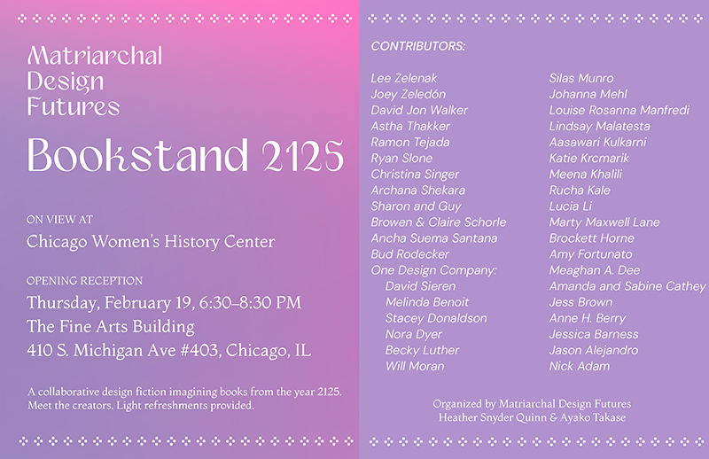

Bookstand 2125 by Matriarchal Design Futures Lab
Bookstand 2125 by Matriarchal Design Futures is a collaborative design fiction project that invites artists and designers to imagine and create books from the year 2125. In this speculative future, knowledge and creativity flourish within systems centered on care, nurturing, and collective well-being rather than competition and scarcity. Contributors are encouraged to explore bold, even preposterous ideas that challenge current paradigms and light the way toward preferred futures.
Matriarchal Design Futures Lab is a collaboration by Heather Snyder Quinn and Ayako Takase. Chicago Women’s History Center is delighted share this evolving three-month exhibition with new book designs created by upcoming designers at the closing on Friday May 8. This event is in conjunction with the Second Fridays at the Fine Arts Building.